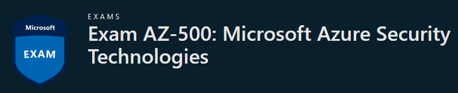

Programación 🖥 | Ingeniería de Datos 📚 | Soluciones de Arquitectura y Nube ☁
¿Qué es un perfil Security Engineer en Microsoft?
Las certificaciones de Microsoft en el rol de Security Engineer están diseñadas para reconocer y validar las habilidades de los profesionales dedicados a salvaguardar la seguridad de los sistemas, redes y datos empresariales. Estos ingenieros de seguridad desempeñan un papel esencial en la identificación y mitigación de amenazas cibernéticas, la implementación de políticas y controles de seguridad, y la respuesta efectiva a incidentes de seguridad. Estas certificaciones abarcan una amplia gama de competencias y tecnologías, desde la seguridad en la nube hasta la protección de infraestructuras locales, y son fundamentales para garantizar la integridad y confidencialidad de los activos tecnológicos en un entorno empresarial cada vez más digital y amenazante.
¿Por dónde empezar? 🤔
Como ingeniero de seguridad de Azure, implementará, gestionará y supervisará la seguridad de los recursos en entornos Azure, multicloud e híbridos como parte de una infraestructura integral. Recomienda componentes y configuraciones de seguridad para proteger lo siguiente:
- Identidad y acceso
- Datos
- Aplicaciones
- Redes
La certificación AZ-500: Microsoft Azure Security Technologies te ayudará a iniciar tu carrera en cyber-seguridad.
Si quieres saber más información acerca de esta certificación dale clic en la imagen 👇
Módulo: Lenguaje de Marcas - Ciclo Formativo: DAW Desarrollo de Aplicaciones Web Desarrollado por: Rafael Armas - Actividad 1 Módulo 1